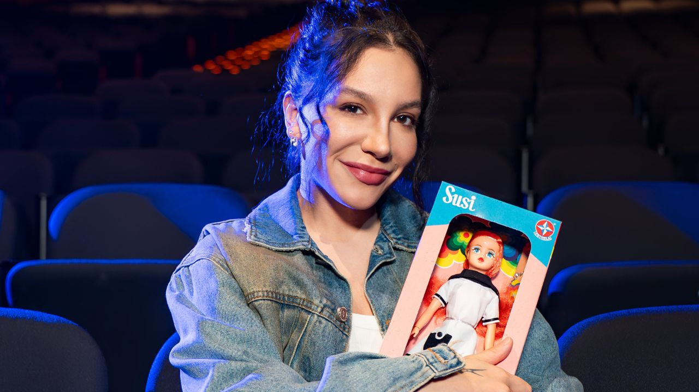

“Susi, o Musical” estreia em São Paulo e resgata a icônica boneca brasileira em uma história inédita

Um dos maiores ícones da infância brasileira volta ao centro da cena com “Susi, o Musical”, produção inédita que mistura memória afetiva, humor, crítica social e músicas originais. Idealizado e escrito por Mara Carvalho, com músicas de Thiago Gimenes e concepção e direção de Ulysses Cruz, o espetáculo marca o retorno da boneca lançada pela Estrela em 1966 — agora, como protagonista de uma trama que dialoga com temas atuais.
Apresentado pelo Ministério da Cultura e com patrocínio do Itaú, o musical estreia em 21 de fevereiro, no Teatro Sérgio Cardoso, em São Paulo, com ingressos já à venda pela Sympla e na bilheteria do teatro. A produção é da Ulysses Cruz Arte & Entretenimento.
Priscilla vive Susi e o elenco completo será anunciado em breve
Na pele de Susi estará Priscilla, cantora e atriz que iniciou a carreira ainda na infância e se consolidou na música pop brasileira, ampliando sua atuação nos palcos e no audiovisual. Outros nomes do elenco, que interpretarão diferentes versões da boneca e personagens do universo simbólico da história, serão revelados em breve.
Enredo: uma jornada entre o quarto de Victor e o mundo das bonecas
A narrativa acompanha Victor, um menino de imaginação fértil, mas mergulhado em um cotidiano mediado por telas. Em uma travessia onírica entre sonho e pesadelo, ele embarca em uma jornada fantástica ao lado de Susi, enfrentando medos e descobrindo novas perspectivas.
Nesse universo surge Vênus, figura que encarna padrões importados, discursos de perfeição e pressões contemporâneas ligadas ao consumo e à imagem, atuando como contraponto ao longo do percurso. Entre aliados e antagonistas, Victor vive um rito de passagem — da infância à adolescência — enquanto Susi tenta reafirmar sua relevância diante de novas gerações.
Temas e linguagem: identidade, redes sociais e pertencimento
Com humor e emoção, o espetáculo aborda temas como identidade, autoestima, consumismo, feminismo, redes sociais, globalização e pertencimento. Em cena, Susi se multiplica em diferentes versões — sugerindo diversidade de profissões, etnias e possibilidades — como reflexão sobre a pluralidade da mulher brasileira e sobre a resistência cultural frente a padrões estrangeiros.
Música como dramaturgia: do pop ao rap, com referências dos anos 1970
A trilha, assinada pelo diretor musical Thiago Gimenes, é tratada como parte essencial da dramaturgia. A proposta musical transita entre eletrônico e acústico, passando por rock, pop, MPB, rap e trap, além de referências sonoras dos anos 1970. A música funciona como extensão do texto, alternando momentos íntimos e grandiosos ao longo da jornada de Susi e Victor.
Serviço
Susi, o Musical
Local: Teatro Sérgio Cardoso – Sala Paschoal Carlos Magno Rua Rui Barbosa, 153 – Bela Vista – São Paulo/SP
Estreia: 21 de fevereiro de 2026 (quinta-feira), às 20h
Temporada: 21 de fevereiro a 12 de abril
Sessões: quintas e sextas às 20h | sábados e domingos às 16h e 20h
Ingressos:
Plateia: R$ 200 (inteira) | R$ 100 (meia)
Plateia Alta: R$ 160 (inteira) | R$ 80 (meia)
Balcão: R$ 50 (inteira) | R$ 25 (meia)
Vendas: Sympla (bileto.sympla.com.br/event/114413) ou bilheteria local
Classificação: Livre
Duração: 90 minutos
Capacidade: 827 lugares